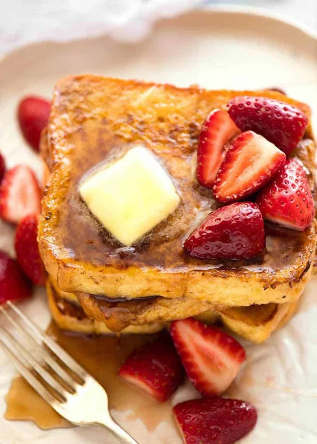

French Toast

Wake up to an irresistible weekend breakfast that’s super quick! This is how to make French Toast –
whisk 2 eggs, 1/2 cup milk, cinnamon and vanilla. Dip bread, pan fry in butter for
2 minutes each side until golden, then douse with maple syrup!
Ingrediants
- Toast
- Eggs
- Milk
- Cinnamon
- Butter
- Vanilla
- Syrup
Steps
- Whisk together Egg Mixture in a bowl. Vigorous whisk = avoid cinnamon floating on top.
- Melt 15g / 1 tbsp butter in a non stick skillet over medium heat.
- Dunk a piece of bread quickly into the egg mixture, coating both sides. Place in pan. Repeat with more slices to fill the pan, but don’t crowd it (do 2 or 3 at a time).
- Cook for 2 ½ – 3 minutes on each side until the surface is golden, then transfer to serving plates.
- Add more butter into the pan and cook remaining bread.
- Serve with butter and plenty of maple syrup, and Macerated Strawberries if using!
Home